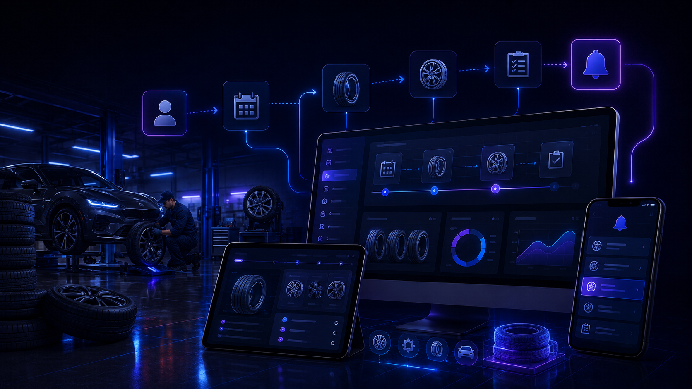

VVZ ERP Suite для шинных центров и монтажа
Когда начинается сезон, звонки и заявки могут приходить почти одновременно: одному клиенту нужен точный размер, другой хочет узнать о наличии шин, третьему нужно перенести запись, а один комплект ещё находится в доставке. Если информация остаётся между телефоном, сообщениями, бумагой, Excel и памятью команды, ошибка в размере или забытая запись быстро нарушает работу дня.

Главная проблема — всё ускоряется одновременно
В загруженные периоды нужно отвечать клиентам, проверять размеры, подтверждать наличие, организовывать заказы и заполнять график монтажа. Одной недостающей информации достаточно, чтобы перезвонить клиенту, искать артикул или перенести запись.
До
Размеры записаны в одном сообщении, запись — в другом инструменте, наличие приходится проверять снова, а некоторые заявки просто остаются в памяти того, кто ответил по телефону.
После
В одной заявке можно собрать клиента, автомобиль, нужные размеры, наличие, возможный заказ, запись, ответственного и историю.
Типовые заявки шинного центра
Размеры и артикулы
Автомобиль, нужные размеры и важные сведения записываются вместе с заявкой, чтобы не начинать поиск заново при каждом обмене.
Наличие и заказ
Команда видит, есть ли шины в наличии, нужно ли их заказать или ещё ожидается подтверждение поставщика.
Запись и монтаж
Заявка остаётся связанной с планируемым временем, типом работы и информацией, нужной для подготовки монтажа.
Выездной монтаж
Для выездной услуги адрес, автомобиль, нужные шины и запланированное время могут оставаться в одной заявке.
Простой путь от заявки до монтажа
Заявка клиента
Клиент запрашивает цену, наличие, запись или монтаж для точного размера.
Автомобиль и шины
Автомобиль, размеры и важные сведения записываются в одной записи.
Наличие
Команда указывает, есть ли шины в наличии, нужно ли их заказать или подтверждение ещё ожидается.
Запись
После подтверждения наличия время монтажа можно связать с заявкой.
Подготовка
Команда видит, что должно быть готово до приезда клиента или выезда монтажника.
Установлено и история
После завершения работы заявка остаётся доступной вместе с историей, важными сведениями и выполненными действиями.
Меньше звонков только для вопроса «мои шины уже приехали?»
В зависимости от выбранной настройки клиент может получить подтверждение после записи заявки, при появлении шин в наличии или после подтверждения записи. Это сокращает часть контрольных звонков в самые загруженные периоды.
Центр сохраняет привычный порядок работы
Excel может остаться частью процесса
Если вы уже используете таблицу для клиентов, размеров, заказов или записей, этот порядок может остаться ориентиром. В журнале можно сохранить действительно полезные для вашей работы сведения.
Экспорт, удобный для Excel
Нужные данные можно выгрузить в CSV-файл, совместимый с Excel, со структурой под ваши рабочие колонки.
Информация доступна там, где работает команда
Локальный инструмент
Центр может использовать локальный инструмент, чтобы находить заявки, автомобили, размеры, заказы, записи, статусы и заметки.
Сервер
Сервер нужен только там, где это необходимо, например для получения заявки с сайта или синхронизации отдельных данных.
Telegram
Telegram может просто уведомить авторизованных сотрудников о новой заявке или важном действии. Основной контроль остаётся в инструменте.
Ответственность видна
В каждой заявке можно указать, кто проверяет наличие, готовит заказ, подтверждает запись или выполняет работу.
Подстройка под центр
VVZ Studio настраивает информацию, этапы и роли под ваш порядок работы, а не навязывает жёсткий способ работы.
Частые вопросы
Нужно ли заменять нашу систему записей?
Нет. Если текущая организация работает хорошо, её можно сохранить. Цель — прежде всего связать информацию, которая сейчас теряется между заявками, шинами, заказами и монтажом.
Нужно ли вести весь склад в VVZ ERP Suite?
Нет. Состав зависит от вашей задачи. Система может просто отслеживать наличие для одной заявки или подключаться к более полному процессу, если это необходимо.
Нужно отказаться от Excel?
Нет. Существующие таблицы могут оставаться ориентиром, а нужные данные можно выгружать в CSV, совместимый с Excel.
Демонстрационное видео скоро
Короткая демонстрация покажет, как в системе можно отслеживать заявку, размер шины, наличие, запись и изменение статуса.
Чётко определённый состав
Функции, доступ, отслеживаемая информация и возможные интеграции определяются вместе с центром до начала внедрения.
Цена на основе реального порядка работы
Цена зависит от вашей текущей организации, количества этапов, уже используемых инструментов и функций, действительно нужных центру. Цель — не продавать ненужные модули.
Также смотрите полный диапазон решений и интеграций VVZ Studio.